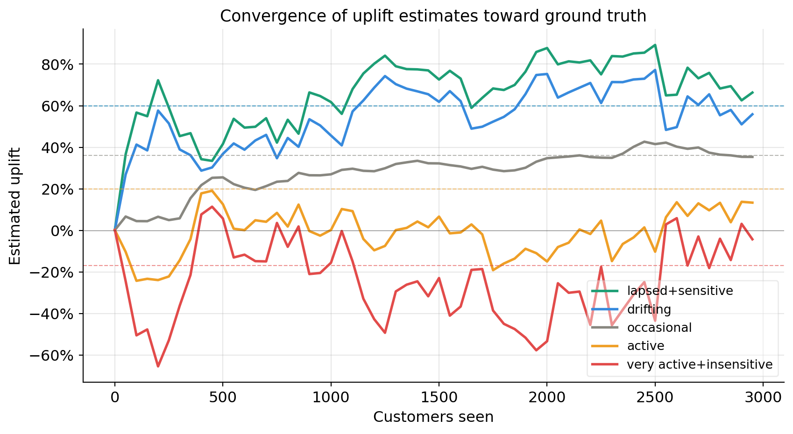
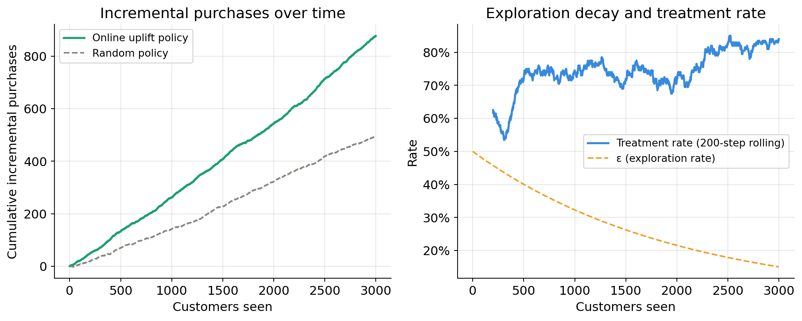
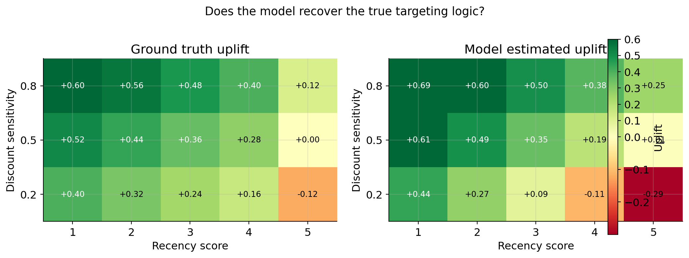

import numpy as np
import pandas as pd
import matplotlib.pyplot as plt
import matplotlib.ticker as mtick
from river import linear_model, optim, preprocessing, compose, metrics
from collections import defaultdict
np.random.seed(42)
plt.rcParams.update({
"figure.facecolor": "white",
"axes.facecolor": "white",
"axes.spines.top": False,
"axes.spines.right":False,
"axes.grid": True,
"grid.alpha": 0.3,
"font.size": 12,
})Online Uplift Modelling with River
The problem we are trying to solve
The usual workflow is:
- Run the experiment — randomise customers into treatment and control
- Wait for outcomes to accumulate
- Fit two models offline (the T-learner)
- Deploy the fitted model to score new customers
This pipeline has a fundamental problem: the model is frozen at the moment you deploy it. The world keeps moving. Customer behaviour drifts with season, price changes, competitor actions. The features that predicted high uplift last quarter may not predict it this quarter. To discover the drift you have to run another experiment, wait again, refit, redeploy. The cycle is slow.
There is a second, subtler problem. The batch RCT treats exploration as a one-time cost — you randomise a cohort, pay the cost of treating some low-uplift customers, and then stop exploring forever. But exploration has ongoing value. A customer segment that looks low-uplift today may become persuadable tomorrow. If you stop sending the email to lapsed customers because your first model said they were a lost cause, you will never discover if that changes.
The online uplift model addresses both problems directly.
The idea : “Learning who to target in real time, one customer at a time”.
Instead of a fixed experiment followed by a frozen model, the system learns continuously: every customer interaction is simultaneously a business decision and a new training observation. The model updates after each outcome, so it tracks distribution shift automatically. And exploration is embedded into the decision policy permanently — the system never fully stops randomising, so it never goes blind to any segment.
NoteThe core shift in thinking
Batch uplift asks: “Given this past experiment, who should I have targeted?”
Online uplift asks: “Given everything I have learned so far, who should I target right now — and what do I still need to learn?”
These are fundamentally different questions. The second one treats targeting as a sequential decision problem, not a post-hoc analysis.
The framework: contextual bandits with DR updates
The technical framework that formalises online uplift is the contextual bandit. At each step:
- A customer arrives with a feature vector \(X_t\) (the context)
- The system chooses an action \(T_t \in \{0, 1\}\) (treat or not)
- The system observes a reward \(Y_t\) (purchased or not)
- The model updates using \((X_t, T_t, Y_t)\) and the logged propensity \(p_t\) — the probability with which \(T_t\) was assigned
The logged propensity is critical. Because the system increasingly favours high-uplift customers over time, the training data is no longer uniformly random. Without correcting for this, the model would see a biased sample and overfit to the customers it already likes. The DR correction we derived in the batch setting — using \(1/p_t\) as an importance weight — is exactly the right fix in the online setting too.
Two interacting goals that must be balanced at every step:
- Exploitation: treat the customers your current model says have high uplift — maximise incremental purchases now
- Exploration: occasionally treat customers regardless of predicted uplift — keep learning, discover drift, avoid blind spots
We use \(\varepsilon\)-greedy exploration: with probability \(\varepsilon\) assign treatment randomly, with probability \(1 - \varepsilon\) follow the uplift model. \(\varepsilon\) decays over time as the model matures, but never reaches zero.
Setup
Synthetic data generating process
We simulate a stream of 3,000 customers arriving sequentially. Each customer has four features. The true uplift function is baked into the simulation so we can measure how quickly the online model converges to it.
def make_customer():
"""Sample one customer's features at random."""
return {
"recency": np.random.randint(1, 6), # 1=lapsed, 5=very active
"age_group": np.random.choice([0, 1, 2]), # 0=young, 1=mid, 2=old
"past_purchases": np.random.randint(0, 11), # 0-10
"discount_sensitivity": np.round(np.random.beta(2, 2), 2), # 0-1
}
def true_uplift(x):
"""
Ground truth individual uplift. The system does not see this —
it is only used to generate outcomes and to evaluate convergence.
Design logic:
- Lapsed customers (low recency) + high discount sensitivity = persuadables
- Very active customers (recency 5) = sleeping dogs (email hurts)
- Old customers with many past purchases = sure things (email irrelevant)
"""
u = 0.0
u += (5 - x["recency"]) * 0.08 # lapsed customers respond more
u += x["discount_sensitivity"] * 0.40 # price-sensitive = responsive
u -= (x["recency"] == 5) * 0.20 # very active = sleeping dogs
u -= (x["age_group"] == 2) * 0.05 # older customers slightly less responsive
u += (x["past_purchases"] < 3) * 0.10 # infrequent buyers are persuadable
return float(np.clip(u, -0.3, 0.6))
def base_rate(x):
"""Baseline purchase probability without treatment."""
p = 0.10
p += x["recency"] * 0.08
p += x["past_purchases"] * 0.02
p += (x["age_group"] == 2) * 0.05
return float(np.clip(p, 0.02, 0.95))
def sample_outcome(x, treated):
"""Draw a purchase outcome given features and treatment assignment."""
p = base_rate(x) + (true_uplift(x) if treated else 0.0)
p = np.clip(p, 0.0, 1.0)
return int(np.random.rand() < p)
# Quick sanity check — show true uplift for a few customer types
examples = [
{"recency": 1, "age_group": 0, "past_purchases": 1, "discount_sensitivity": 0.8},
{"recency": 3, "age_group": 1, "past_purchases": 5, "discount_sensitivity": 0.5},
{"recency": 5, "age_group": 2, "past_purchases": 9, "discount_sensitivity": 0.2},
]
print("Customer type | True uplift")
print("-" * 42)
labels = ["Lapsed, young, sensitive",
"Occasional, mid, moderate",
"Very active, old, insensitive"]
for lbl, x in zip(labels, examples):
print(f"{lbl:<25}| {true_uplift(x):+.2f}")Customer type | True uplift
------------------------------------------
Lapsed, young, sensitive | +0.60
Occasional, mid, moderate| +0.36
Very active, old, insensitive| -0.17The online uplift model
We maintain two logistic regression models trained with SGD via river:
model_t: learns \(P(\text{buy} \mid X, T=1)\) — updated only when a customer is treatedmodel_c: learns \(P(\text{buy} \mid X, T=0)\) — updated only when a customer is in control
The predicted uplift for a new customer is mu1 - mu0. Updates are weighted by the inverse logged propensity to correct for the non-random assignment policy — the online equivalent of the DR correction.
def make_pipeline():
"""
River pipeline: standardise features → logistic regression with Adam.
Returns a fresh untrained pipeline.
"""
return (
preprocessing.StandardScaler() |
linear_model.LogisticRegression(optimizer=optim.Adam(lr=0.05))
)
model_t = make_pipeline() # treatment arm model
model_c = make_pipeline() # control arm modelExploration policy
def epsilon_greedy(uplift_score, step, eps_start=0.5, eps_end=0.05, decay=2000):
"""
Epsilon-greedy policy with exponential decay.
- Early on (step ~ 0): eps ~ eps_start → mostly explore
- Later (step >> decay): eps ~ eps_end → mostly exploit
- Never reaches zero: the system keeps exploring permanently
"""
eps = eps_end + (eps_start - eps_end) * np.exp(-step / decay)
if np.random.rand() < eps:
# Explore: assign randomly, p = 0.5
treat = int(np.random.rand() < 0.5)
p_logged = 0.5
else:
# Exploit: follow the uplift score
treat = int(uplift_score > 0)
# Soft probability to avoid division by zero in DR weights
p_logged = 0.90 if treat == 1 else 0.10
return treat, p_logged, epsThe online loop
N = 3000 # total customers in the stream
# ── tracking ──────────────────────────────────────────────────────────────
history = []
cumulative_incremental = 0.0 # purchases gained vs not treating anyone
cumulative_random_incr = 0.0 # counterfactual: what random targeting earns
# For convergence tracking — measure estimated uplift on a fixed test grid
# every 50 steps
TRACK_EVERY = 50
test_grid = [
{"recency": 1, "age_group": 0, "past_purchases": 1, "discount_sensitivity": 0.8},
{"recency": 2, "age_group": 0, "past_purchases": 2, "discount_sensitivity": 0.7},
{"recency": 3, "age_group": 1, "past_purchases": 5, "discount_sensitivity": 0.5},
{"recency": 4, "age_group": 1, "past_purchases": 7, "discount_sensitivity": 0.3},
{"recency": 5, "age_group": 2, "past_purchases": 9, "discount_sensitivity": 0.2},
]
test_labels = ["lapsed+sensitive", "drifting", "occasional",
"active", "very active+insensitive"]
true_uplifts = [true_uplift(x) for x in test_grid]
uplift_trace = defaultdict(list) # label → list of (step, estimated_uplift)
# ── main loop ─────────────────────────────────────────────────────────────
for step in range(N):
x = make_customer()
# 1. Predict uplift with current models
# river returns {False: p_0, True: p_1}
mu1 = model_t.predict_proba_one(x).get(True, 0.5)
mu0 = model_c.predict_proba_one(x).get(True, 0.5)
uplift_hat = mu1 - mu0
# 2. Exploration policy
treat, p_logged, eps = epsilon_greedy(uplift_hat, step)
# 3. Observe outcome (instant feedback)
y = sample_outcome(x, treated=bool(treat))
# 4. DR-corrected importance weight
# Treated customers unlikely to be treated → high weight
# Control customers unlikely to be control → high weight
if treat == 1:
iw = 1.0 / p_logged
model_t.learn_one(x, bool(y), sample_weight=iw)
else:
iw = 1.0 / (1.0 - p_logged)
model_c.learn_one(x, bool(y), sample_weight=iw)
# 5. Track cumulative incremental purchases
# Incremental = actual outcome − what control model predicts without email
baseline = model_c.predict_proba_one(x).get(True, 0.5)
incremental = y - baseline if treat else 0.0
cumulative_incremental += incremental
# Random policy counterfactual: treat everyone with p=0.5
random_treat = int(np.random.rand() < 0.5)
random_y = sample_outcome(x, treated=bool(random_treat))
random_incr = random_y - baseline if random_treat else 0.0
cumulative_random_incr += random_incr
# 6. Snapshot convergence every TRACK_EVERY steps
if step % TRACK_EVERY == 0:
for lbl, tx in zip(test_labels, test_grid):
est_mu1 = model_t.predict_proba_one(tx).get(True, 0.5)
est_mu0 = model_c.predict_proba_one(tx).get(True, 0.5)
uplift_trace[lbl].append((step, est_mu1 - est_mu0))
history.append({
"step": step,
"treat": treat,
"outcome": y,
"uplift_hat": uplift_hat,
"true_uplift": true_uplift(x),
"eps": eps,
"cumulative_incremental": cumulative_incremental,
"cumulative_random": cumulative_random_incr,
})
df = pd.DataFrame(history)
print(f"Simulation complete. {N} customers processed.")
print(f"Final epsilon: {df['eps'].iloc[-1]:.3f}")
print(f"Treatment rate: {df['treat'].mean():.1%}")Simulation complete. 3000 customers processed.
Final epsilon: 0.150
Treatment rate: 74.5%Results
Convergence of uplift estimates
How quickly does the model learn the true uplift for each customer type? Each line is one customer segment from our test grid. Dashed horizontal lines are the ground truth values baked into the simulation.
colors = ["#1D9E75", "#378ADD", "#888780", "#EF9F27", "#E24B4A"]
fig, ax = plt.subplots(figsize=(9, 5))
for (lbl, trace), col, true_u in zip(
uplift_trace.items(), colors, true_uplifts):
steps, vals = zip(*trace)
ax.plot(steps, vals, label=lbl, color=col, linewidth=2)
ax.axhline(true_u, color=col, linewidth=0.8, linestyle="--", alpha=0.6)
ax.axhline(0, color="black", linewidth=0.5, alpha=0.4)
ax.set_xlabel("Customers seen")
ax.set_ylabel("Estimated uplift")
ax.set_title("Convergence of uplift estimates toward ground truth",
fontsize=13, fontweight="normal")
ax.yaxis.set_major_formatter(mtick.PercentFormatter(xmax=1, decimals=0))
ax.legend(fontsize=10, framealpha=0.4)
plt.tight_layout()
plt.show()
Note
Early in the simulation the estimates are noisy and sometimes far from the truth — the model has seen very few observations and is still mostly exploring. As the customer count grows the estimates tighten around the dashed ground truth lines. The sleeping dog segment (very active, insensitive) should converge to a negative value — the model learns not to email them.
Cumulative incremental purchases vs random targeting
This is the operational metric that matters: how many extra purchases does the online uplift policy generate compared to a naive random targeting policy?
fig, axes = plt.subplots(1, 2, figsize=(11, 4.5))
# Left: cumulative incremental purchases
ax = axes[0]
ax.plot(df["step"], df["cumulative_incremental"],
color="#1D9E75", linewidth=2, label="Online uplift policy")
ax.plot(df["step"], df["cumulative_random"],
color="#888780", linewidth=1.5, linestyle="--", label="Random policy")
ax.set_xlabel("Customers seen")
ax.set_ylabel("Cumulative incremental purchases")
ax.set_title("Incremental purchases over time", fontweight="normal")
ax.legend(fontsize=10)
# Right: rolling treatment rate and epsilon
ax2 = axes[1]
window = 200
rolling_treat = df["treat"].rolling(window).mean()
ax2.plot(df["step"], rolling_treat,
color="#378ADD", linewidth=2, label=f"Treatment rate ({window}-step rolling)")
ax2.plot(df["step"], df["eps"],
color="#EF9F27", linewidth=1.5, linestyle="--", label="ε (exploration rate)")
ax2.set_xlabel("Customers seen")
ax2.set_ylabel("Rate")
ax2.yaxis.set_major_formatter(mtick.PercentFormatter(xmax=1, decimals=0))
ax2.set_title("Exploration decay and treatment rate", fontweight="normal")
ax2.legend(fontsize=10)
plt.tight_layout()
plt.show()
# Summary numbers
final_online = df["cumulative_incremental"].iloc[-1]
final_random = df["cumulative_random"].iloc[-1]
lift_vs_random = final_online - final_random
print(f"Cumulative incremental purchases — online uplift policy : {final_online:.1f}")
print(f"Cumulative incremental purchases — random policy : {final_random:.1f}")
print(f"Gain from online uplift vs random : {lift_vs_random:+.1f}")
Cumulative incremental purchases — online uplift policy : 876.7
Cumulative incremental purchases — random policy : 494.8
Gain from online uplift vs random : +381.9
TipReading the right panel
Early on, the treatment rate fluctuates around 50% — the system is exploring broadly. As \(\varepsilon\) decays and the model becomes more confident, the treatment rate shifts: segments with positive predicted uplift get treated more, sleeping dog segments get treated less. The treatment rate does not converge to 0% or 100% because \(\varepsilon\) never reaches zero — permanent exploration is intentional.
What the model has learned
At the end of the simulation we can inspect the model’s predictions across the feature space to verify it has recovered the correct targeting logic.
# Score a grid of hypothetical customers
grid_rows = []
for recency in range(1, 6):
for disc_sens in [0.2, 0.5, 0.8]:
x = {
"recency": recency,
"age_group": 1, # hold constant
"past_purchases": 5, # hold constant
"discount_sensitivity": disc_sens,
}
est_mu1 = model_t.predict_proba_one(x).get(True, 0.5)
est_mu0 = model_c.predict_proba_one(x).get(True, 0.5)
grid_rows.append({
"recency": recency,
"discount_sensitivity": disc_sens,
"estimated_uplift": round(est_mu1 - est_mu0, 3),
"true_uplift": round(true_uplift(x), 3),
"decision": "email" if (est_mu1 - est_mu0) > 0 else "skip",
})
pd.DataFrame(grid_rows).to_string(index=False)' recency discount_sensitivity estimated_uplift true_uplift decision\n 1 0.2 0.440 0.40 email\n 1 0.5 0.612 0.52 email\n 1 0.8 0.689 0.60 email\n 2 0.2 0.272 0.32 email\n 2 0.5 0.495 0.44 email\n 2 0.8 0.603 0.56 email\n 3 0.2 0.085 0.24 email\n 3 0.5 0.353 0.36 email\n 3 0.8 0.501 0.48 email\n 4 0.2 -0.110 0.16 skip\n 4 0.5 0.188 0.28 email\n 4 0.8 0.383 0.40 email\n 5 0.2 -0.295 -0.12 skip\n 5 0.5 0.006 0.00 email\n 5 0.8 0.250 0.12 email'import matplotlib.colors as mcolors
pivot_est = (pd.DataFrame(grid_rows)
.pivot(index="discount_sensitivity", columns="recency", values="estimated_uplift"))
pivot_true = (pd.DataFrame(grid_rows)
.pivot(index="discount_sensitivity", columns="recency", values="true_uplift"))
fig, axes = plt.subplots(1, 2, figsize=(11, 4))
cmap = plt.cm.RdYlGn
norm = mcolors.TwoSlopeNorm(vmin=-0.3, vcenter=0, vmax=0.6)
for ax, data, title in zip(axes,
[pivot_true, pivot_est],
["Ground truth uplift", "Model estimated uplift"]):
im = ax.imshow(data.values, cmap=cmap, norm=norm,
aspect="auto", origin="lower")
ax.set_xticks(range(5))
ax.set_xticklabels([1, 2, 3, 4, 5])
ax.set_yticks(range(3))
ax.set_yticklabels([0.2, 0.5, 0.8])
ax.set_xlabel("Recency score")
ax.set_ylabel("Discount sensitivity")
ax.set_title(title, fontweight="normal")
for i in range(data.shape[0]):
for j in range(data.shape[1]):
ax.text(j, i, f"{data.values[i, j]:+.2f}",
ha="center", va="center", fontsize=9,
color="black" if abs(data.values[i, j]) < 0.35 else "white")
plt.colorbar(im, ax=axes, label="Uplift", fraction=0.03)
plt.suptitle("Does the model recover the true targeting logic?",
fontsize=13, fontweight="normal", y=1.01)
plt.tight_layout()
plt.show()
Design decisions and their trade-offs
| Decision | Choice made here | Alternative | Trade-off |
|---|---|---|---|
| Update rule | SGD via river |
Full batch retrain | SGD is online and cheap; batch is more stable |
| Exploration | \(\varepsilon\)-greedy | Thompson sampling | \(\varepsilon\)-greedy is simple; Thompson gives automatic uncertainty-driven exploration |
| Confounding correction | IPW weights on arm-specific models | Full DR estimator | IPW is simpler; DR is doubly robust |
| Outcome delay | Instant | Queued (realistic) | Instant simplifies the loop; queuing is needed in production |
| Two arm models | T-learner style | Single model with T as feature | Two models isolate arm effects; single model is more parameter-efficient |
ImportantThe key assumption
The online system assumes the causal structure is stationary enough that what you learned about customer segment A yesterday is still valid today. If behaviour shifts abruptly (a competitor drops prices, a product goes viral) the model will adapt — but only as fast as new observations arrive for the affected segments. Permanent exploration (\(\varepsilon > 0\) always) is the main defence against getting stuck in a stale policy.
Summary
The online uplift model solves a problem the batch approach cannot: it makes targeting decisions and learns from them simultaneously, without ever freezing.
The key ideas layered together are:
- Contextual bandit — formalises the sequential decision problem
- Two online SGD models (via
river) — track uplift continuously - \(\varepsilon\)-greedy with decay — balances exploration and exploitation
- Importance weighting — corrects for the non-random assignment policy so the model does not learn a biased version of the world
The result is a system that starts knowing nothing, explores broadly, and progressively discovers which customers respond to treatment — while still serving real customers and generating real incremental purchases throughout the learning process.
Requirements
# install once
# pip install river numpy pandas matplotlibimport river
print(f"river version : {river.__version__}")
import sys
print(f"python version: {sys.version.split()[0]}")river version : 0.23.0
python version: 3.12.9